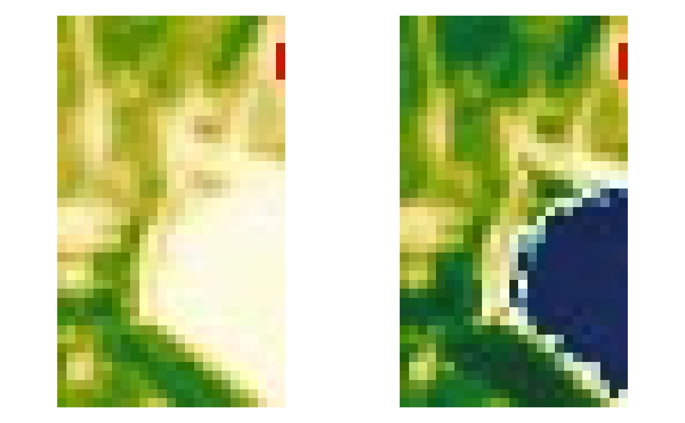
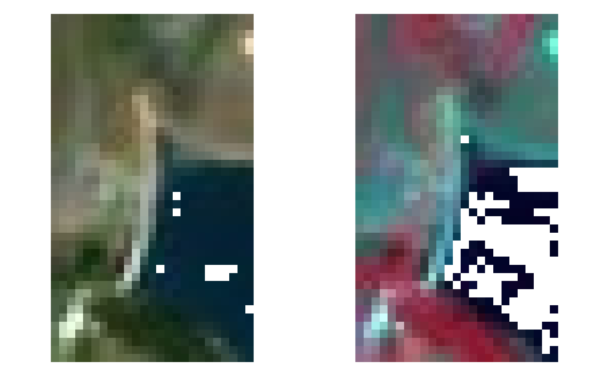

The function is a wrapper to perform the entire
processing chain to find, download and pre-process Sentinel-2
data. Input is a set of parameters that can be passed with a
list or file (parameter param_list) or singularly (see the
descriptions of all the other parameters).
sen2r( param_list = NULL, gui = NA, preprocess = TRUE, s2_levels = "l2a", sel_sensor = c("s2a", "s2b"), online = TRUE, order_lta = TRUE, apihub = NA, downloader = "builtin", overwrite_safe = FALSE, rm_safe = "no", step_atmcorr = "auto", sen2cor_use_dem = NA, sen2cor_gipp = NA, max_cloud_safe = 100, timewindow = NA, timeperiod = "full", extent = NA, extent_name = "sen2r", s2tiles_selected = NA, s2orbits_selected = NA, list_prods = NA, list_rgb = NA, list_indices = NA, index_source = "BOA", rgb_ranges = NA, mask_type = NA, max_mask = 100, mask_smooth = 0, mask_buffer = 0, clip_on_extent = TRUE, extent_as_mask = FALSE, reference_path = NA, res = NA, res_s2 = "10m", unit = "Meter", proj = NA, resampling = "near", resampling_scl = "near", outformat = "GTiff", rgb_outformat = "GTiff", index_datatype = "Int16", compression = "DEFLATE", rgb_compression = "90", overwrite = FALSE, path_l1c = NA, path_l2a = NA, path_tiles = NA, path_merged = NA, path_out = NA, path_rgb = NA, path_indices = NA, path_subdirs = TRUE, thumbnails = TRUE, parallel = FALSE, processing_order = "by_groups", use_python = NA, tmpdir = NA, rmtmp = TRUE, log = NA )
Arguments
| param_list | (optional) List of input parameters:
it can be both an R list or the path of a JSON file.
If some parameters are passed both as elements of |
|---|---|
| gui | (optional) Logical: if TRUE, function |
| preprocess | (optional) Logical: TRUE (default) to perform also preprocessing steps, FALSE not to (do only find, download and atmospheric correction). |
| s2_levels | (optional) Character vector of length 1 or 2, with
Sentinel-2 levels required for processing steps or as output.
This parameter is used only if |
| sel_sensor | (optional) Character vector of length 1 or 2, with Sentinel-2 sensors to be used. Accepted values: "s2a" and "s2b"; default: c("s2a","s2b"). |
| online | (optional) Logical: TRUE (default) to search for available products on SciHub (and download if needed); FALSE to work only with already downloaded SAFE products. |
| order_lta | (optional) Logical: TRUE (default) to order products from the Long Term Archive if unavailable for direct download; FALSE to simply skip them (this option has effect only in online mode). |
| apihub | Path of the text file containing credentials of SciHub account. If NA (default), the default location inside the package will be used. |
| downloader | (optional) Character value corresponding to the executable which should be used to download SAFE products. It could be one among "builtin" (default) and "aria2". If aria2 is not installed, built-in method will be used instead. |
| overwrite_safe | (optional) Logical: TRUE to overwrite existing products with products found online or manually corrected, FALSE (default) to skip download and atmospheric correction for products already existing. |
| rm_safe | (optional) Character: should SAFE products be deleted after preprocessing? "yes" (or "all") means to delete all SAFE; "no" (default) not to delete; "l1c" to delete only Level-1C products. |
| step_atmcorr | (optional) Character vector to determine how to obtain Level-2A SAFE products:
|
| sen2cor_use_dem | (optional) Logical, determining if a DEM should be
used for topographic correction by Sen2Cor (see the documentation of
Note: in a future release of sen2r, the default value will be set to TRUE, so to grant homogeneity between Level-2A products downloaded from ESA Hub and generated using Sen2Cor. |
| sen2cor_gipp | (optional) Ground Image Processing Parameters (GIPP)
to be passed to Sen2Cor (see the documentation of |
| max_cloud_safe | (optional) Integer number (0-100) containing
the maximum cloud level of each SAFE to be considered (default: no filter).
It it used to limit the research of SAFE products to "good" images,
so it is applied only to non-existing archives (existing SAFE are always
used).
In this sense, this parameter is different from |
| timewindow | (optional) Temporal window for querying: Date object of length 1 (single day) or 2 (time window). Default is NA, meaning that no filters are used if online = FALSE, and all found images are processed; if online = TRUE, last 90 days are processed. Is it possible to pass also integer (or difftime) values, which are interpreted as the last n days. |
| timeperiod | (optional) Character:
|
| extent | (optional) Spatial extent on which to clip products (it can be both the path of a vector file or a geoJSON). Default is NA for offline mode (meaning no extent: all found tiles are entirely used); in online mode, a sample extent is used as default. |
| extent_name | (optional) Name of the area set as extent, to be used in the output file names. Default is "sen2r" The name is an alphanumeric string which cannot contain points nor underscores, and that cannot be a five-length string with the same structure of a tile ID (two numeric and three uppercase character values). |
| s2tiles_selected | (optional) Character vector with the Sentinel-2 tiles to be considered (default is NA, meaning all the tiles). |
| s2orbits_selected | (optional) Character vector with the Sentinel-2 orbits to be considered (still to be implemented; for now, all the accepted values are listed). |
| list_prods | (optional) Character vector with the values of the products to be processed (accepted values: "TOA", "BOA", "SCL", "TCI"). Default is no one (NA). |
| list_rgb | (optional) Character vector with the values of the RGB images to be produced. Images are in the form RGBrgbx, where:
|
| list_indices | (optional) Character vector with the values of the spectral indices to be computed. Default is no one (NA). |
| index_source | (optional) Character value: if "BOA" (default), indices are computed from BOA values; if "TOA", non corrected reflectances are instead used (be careful to use this setting!). |
| rgb_ranges | (optional) Range of valid values to be used for RGB products.
Values must be provided in the same scale used within SAFE and BOA/TOA
products (0-10000, corresponding to reflectances * 10000).
If can be a 2-length integer vector (min-max for all the 3 bands) or a 6-length vector or
3x2 matrix (min red, min green, min blue, max red, max green, max blue).
Default is to use c(0,2500) for bands 2, 3 and 4; c(0,7500) for other bands.
In case |
| mask_type | (optional) Character value which determines the categories
in the Surface Classification Map to be masked (see |
| max_mask | (optional) Numeric value (range 0 to 100), which represents
the maximum percentage of allowed masked surface (by clouds or any other
type of mask chosen with argument
|
| mask_smooth | (optional) Numeric positive value: the smoothing radius (expressed in unit of measure of the output projection, typically metres) to be applied to the cloud mask by function s2_mask. |
| mask_buffer | (optional) Numeric value: the buffering radius (expressed in unit of measure of the output projection, typically metres) to be applied to the cloud mask by function s2_mask. Default value (0) means that no buffer is applied; a positive value causes an enlargement of the masked area; a negative value cause a reduction. |
| clip_on_extent | (optional) Logical: if TRUE (default), output products and indices are clipped to the selected extent (and resampled/reprojected); if FALSE, the geometry and extension of the tiles is maintained. |
| extent_as_mask | (optional) Logical: if TRUE, pixel values outside
the |
| reference_path | (optional) Path of the raster file to be used as a reference grid. If NA (default), no reference is used. |
| res | (optional) Numeric vector of length 2 with the x-y resolution for output products. Default (NA) means that the resolution is kept as native. |
| res_s2 | (optional) Character value corresponding to the native Sentinel-2 resolution to be used. Accepted values are "10m" (default), "20m" and "60m". |
| unit | (optional) Character value corresponding to the unit of measure with which to interpret the resolution (for now, only "Meter" - the default value - is supported). |
| proj | (optional) Character string with the pro4string of the output resolution. default value (NA) means not to reproject. |
| resampling | (optional) Resampling method (one of the values supported
by |
| resampling_scl | (optional) Resampling method for categorical products
(for now, only SCL): one among |
| outformat | (optional) Format of the output file (in a
format recognised by GDAL). Default is |
| rgb_outformat | (optional) Format of the output RGB products (in a
format recognised by GDAL). Default is |
| index_datatype | (optional) Numeric datatype of the output spectral indices (see s2_calcindices. |
| compression | (optional) In the case GTiff is chosen as output format, the compression indicated with this parameter is used (default is "DEFLATE"). |
| rgb_compression | (optional) In the case |
| overwrite | (optional) Logical value: should existing output files be overwritten? (default: FALSE). |
| path_l1c | (optional) Path of the directory in which Level-1C SAFE products are searched and/or downloaded. If not provided (default), a temporary directory is used. |
| path_l2a | (optional) Path of the directory in which Level-2A SAFE products are searched, downloaded and/or generated. If not provided (default), a temporary directory is used. |
| path_tiles | (optional) Path of the directory in which Sentinel-2
tiles (as generated by s2_translate) are searched and/or generated.
If not provided (default), a temporary directory is used, and files
are generated as virtual rasters; otherwise, they are generated in
the format specified with |
| path_merged | (optional) Path of the directory in which Sentinel-2
tiles merged by orbit (as generated by s2_merge) are searched and/or
generated.
If not provided (default), a temporary directory is used, and files
are generated as virtual rasters; otherwise, they are generated in
the format specified with |
| path_out | (optional) Path of the directory in which Sentinel-2 output products are searched and/or generated. If not provided (default), a temporary directory is used. |
| path_rgb | (optional) Path of the directory in RGB products
are searched and/or generated.
If not provided (default), |
| path_indices | (optional) Path of the directory in which files of
spectral indices are searched and/or generated.
If not provided (default), |
| path_subdirs | (optional) Logical: if TRUE (default), a directory
for each output product or spectral index is generated within
|
| thumbnails | (optional) Logical: if TRUE (default), a thumbnail is
added for each product created. Thumbnails are JPEG or PNG georeferenced
small images (width or height of 1024 pixels) with default colour palettes
(for more details, see the help window in the GUI). They are placed in
a subdirectory of the products names |
| parallel | (optional) Logical or integer: setting to TRUE, the processing
is executed using multiple cores in order to speed up the execution.
Parallelisation is performed on groups of dates.
The number of cores is automatically determined; specifying it is also
possible (e.g. |
| processing_order | (optional) Character string: order used to execute the processing chain (this affects the speed of computation and the usage of system resources). Values can be one of the followings:
|
| use_python | Deprecated argument |
| tmpdir | (optional) Path where intermediate files will be created.
Default is a temporary directory (unless |
| rmtmp | (optional) Logical: should temporary files be removed?
(Default: TRUE). |
| log | (optional) Character string with the path where the package messages will be redirected. Default (NA) is not to redirect (use standard output). A two-length character with two paths (which can also coincide) can be used to redirect also the output: in this case, the first path is the path for messages, the second one for the output. |
Value
A vector with the paths of the files which were created (excluded the temporary files); NULL otherwise. The vector includes some attributes:
cloudcoveredwith the list of images not created due to the higher percentage of cloud covered pixels;missingwith the list of images not created due to other reasons;procpathwith the path of a json parameter file, created after eachsen2r()run, containing the parameters used in the execution of the function;ltapathwith the path of a json file containing the list of the SAFE Sentinel-2 archives eventually ordered in Long Term Archive.statuswith a data.frame summarising the status of the processing (seesen2r_process_report()).
Note
License: GPL 3.0
Examples
# \donttest{ # Open an interactive section if (interactive()) { sen2r() } # Launch a processing from a saved JSON file (here we use an internal function # to create a testing json file - this is not intended to be used by final users) json_path <- build_example_param_file() out_paths_2 <- sen2r(json_path)#>#>#> #>#>#> #>#> #> #> #>#>#>#> #>#>#>#>#> #>#>#>#>#>#>#> #>#>#> #>#> #>#>#>#>#>#>#>#> #> #>#>#>#>#>#> #># Notice that passing the path of a JSON file results in launching # a session without opening the gui, unless gui = TRUE is passed. # Launch a processing using function arguments safe_dir <- file.path(dirname(attr(load_binpaths(), "path")), "safe") out_dir_3 <- tempfile(pattern = "Barbellino_") out_paths_3 <- sen2r( gui = FALSE, step_atmcorr = "l2a", extent = system.file("extdata/vector/barbellino.geojson", package = "sen2r"), extent_name = "Barbellino", timewindow = as.Date("2017-07-03"), list_prods = c("TOA","BOA","SCL"), list_indices = c("NDVI","MSAVI2"), list_rgb = c("RGB432T", "RGB432B", "RGB843B"), mask_type = "cloud_medium_proba", max_mask = 80, path_l1c = safe_dir, path_l2a = safe_dir, path_out = out_dir_3 )#>#> #>#> #>#>#>#> #>#>#> #>#> #> #>#>#>#> #>#> #>#> #>#> #>#> #> #>#> Warning: Processing was not completed because some required images are offline #> (see the processing log).#>#>#> #># Launch a processing based on a JSON file, but changing some parameters # (e.g., the same processing on a different extent) out_dir_4 <- tempfile(pattern = "Scalve_") out_paths_4 <- sen2r( param_list = json_path, extent = system.file("extdata/vector/scalve.kml", package = "sen2r"), extent_name = "Scalve", path_out = out_dir_4 )#>#> #>#>#> #>#> #> #> #> #>#>#>#> #>#>#>#>#> #>#>#>#>#>#>#>#>#>#> #>#>#> #>#> #>#>#>#>#>#>#>#> #> #>#>#>#>#>#> #># Show outputs (loading thumbnails) # Generate thumbnails names thumb_3 <- file.path(dirname(out_paths_3), "thumbnails", gsub("tif$", "jpg", basename(out_paths_3))) thumb_3[grep("SCL", thumb_3)] <- gsub("jpg$", "png", thumb_3[grep("SCL", thumb_3)]) thumb_4 <- file.path(dirname(out_paths_4), "thumbnails", gsub("tif$", "jpg", basename(out_paths_4))) thumb_4[grep("SCL", thumb_4)] <- gsub("jpg$", "png", thumb_4[grep("SCL", thumb_4)]) oldpar <- par(mfrow = c(1,2), mar = rep(0,4)) image(stars::read_stars(thumb_3[grep("BOA", thumb_3)]), rgb = 1:3)#> Warning: coercing argument of type 'list' to logical#> Error in if (!np || any(sapply(prefixes, has_prefix, x = .x))) .x else normalizePath(.x, mustWork = FALSE): valore mancante dove è richiesto TRUE/FALSE#> Warning: coercing argument of type 'list' to logical#> Error in if (!np || any(sapply(prefixes, has_prefix, x = .x))) .x else normalizePath(.x, mustWork = FALSE): valore mancante dove è richiesto TRUE/FALSEpar(mfrow = c(1,2), mar = rep(0,4)) image(stars::read_stars(thumb_3[grep("MSAVI2", thumb_3)]), rgb = 1:3)#> Warning: coercing argument of type 'list' to logical#> Error in if (!np || any(sapply(prefixes, has_prefix, x = .x))) .x else normalizePath(.x, mustWork = FALSE): valore mancante dove è richiesto TRUE/FALSE#> Warning: coercing argument of type 'list' to logical#> Error in if (!np || any(sapply(prefixes, has_prefix, x = .x))) .x else normalizePath(.x, mustWork = FALSE): valore mancante dove è richiesto TRUE/FALSEpar(mfrow = c(1,2), mar = rep(0,4)) image(stars::read_stars(thumb_3[grep("RGB432B", thumb_3)]), rgb = 1:3)#> Warning: coercing argument of type 'list' to logical#> Error in if (!np || any(sapply(prefixes, has_prefix, x = .x))) .x else normalizePath(.x, mustWork = FALSE): valore mancante dove è richiesto TRUE/FALSE#> Warning: coercing argument of type 'list' to logical#> Error in if (!np || any(sapply(prefixes, has_prefix, x = .x))) .x else normalizePath(.x, mustWork = FALSE): valore mancante dove è richiesto TRUE/FALSEpar(mfrow = c(1,2), mar = rep(0,4)) image(stars::read_stars(thumb_4[grep("BOA", thumb_4)]), rgb = 1:3) image(stars::read_stars(thumb_4[grep("SCL", thumb_4)]), rgb = 1:3)par(mfrow = c(1,2), mar = rep(0,4)) image(stars::read_stars(thumb_4[grep("MSAVI2", thumb_4)]), rgb = 1:3) image(stars::read_stars(thumb_4[grep("NDVI", thumb_4)]), rgb = 1:3)par(mfrow = c(1,2), mar = rep(0,4)) image(stars::read_stars(thumb_4[grep("RGB432B", thumb_4)]), rgb = 1:3) image(stars::read_stars(thumb_4[grep("RGB843B", thumb_4)]), rgb = 1:3)